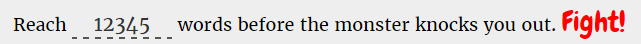
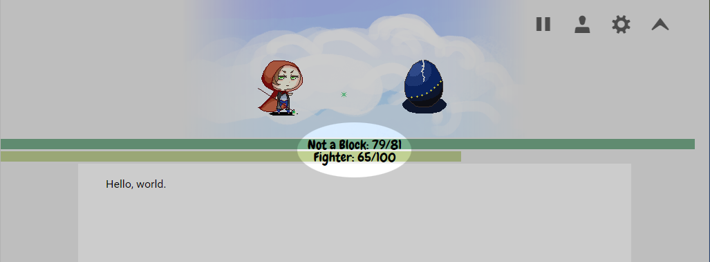
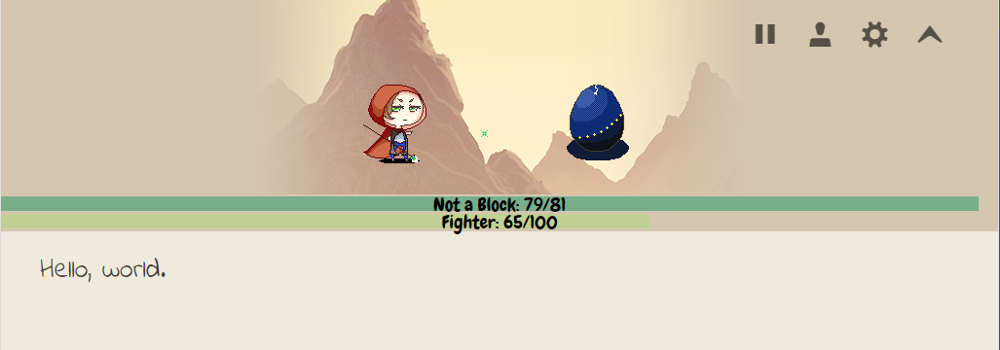
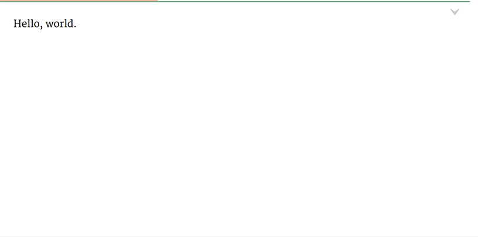

What is Fighter's Block?
Fighter's Block is a writing app that exploits conditioning to overcome writer's block and sheer laziness. Rewards for writing and punishments for stopping are wrapped in a battle system inspired by turn-based RPGs.The opponent is a monster that deals continuous damage to the you, while you must keep writing to heal yourself and attack the monster. Hurry, before your HP drops to zero!
Worry about editing later. For now, just get those creative juices flowing, and write.
Cool! How do I use it?
To get started, enter your word count goal and click "Fight!" to continue.

Now, defeat the monster by reaching your word count goal before your HP is reduced to zero.

What do these buttons do?
This is the Pause button. When the game is paused, the monster will no longer deal damage to you. It's a good option to use if watching the HP bar slide down is hurting your mojo.
This is the Player button. Here, you can find options to see your stats and find a new monster.
This is the Settings menu. Here, you can change the attack speed and strength of your monster, to better suit your writing process. A faster monster deals damage more quickly, while a stronger one deals more damage in one blow.
You can also make aesthetic changes to the text editor itself.

Finally, this is the Minimize key.
It hides the pixel images and shrinks the HP bar, for distraction-free writing.

Sound interesting?
Let's FIGHT!
Some final notes
The word count function works in English (and other languages that use spaces to separate words) as well as Chinese.
If you have questions, comments, or suggestions, please send them to @psstkeepwriting.
Thanks for giving Fighter's Block a spin!